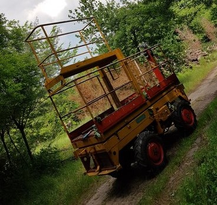
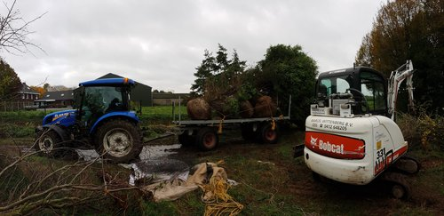

projectpagina
Op deze pagina vertel ik meer over mijn werk en wat ik allemaal doe.
 Hierboven staan twee foto's van de wagens die we onder andere gebruiken. Links staat de hoogwerker die wij gebruiken als we bomen gaan snoeien. Hij past precies tussen de boom rijen en kan redelijk hoog komen.
Op de rechter foto waren we bezig met rooien. Dat is het uit de grond halen van bomen voor een klant. Eerst halen we de bomen eruit met een rooimachine. Daarna pakken we de kluit van de boom in met een jutte lap en een ijzer net. Dan kunnen de bomen op de wagen worden geladen en worden vervoerd naar de klant.
Op het filmpje hierboven zit ik in een tractor. We hadden net een boom gerooid, maar die bleek net te zwaar voor de trsctor. Het sturen ging wat minder zo als te zien is.